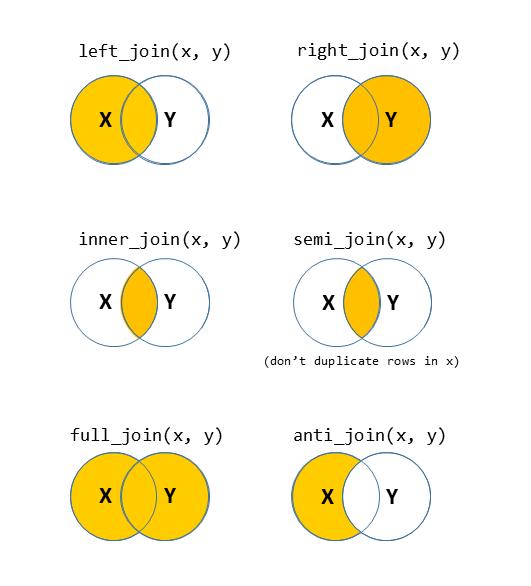
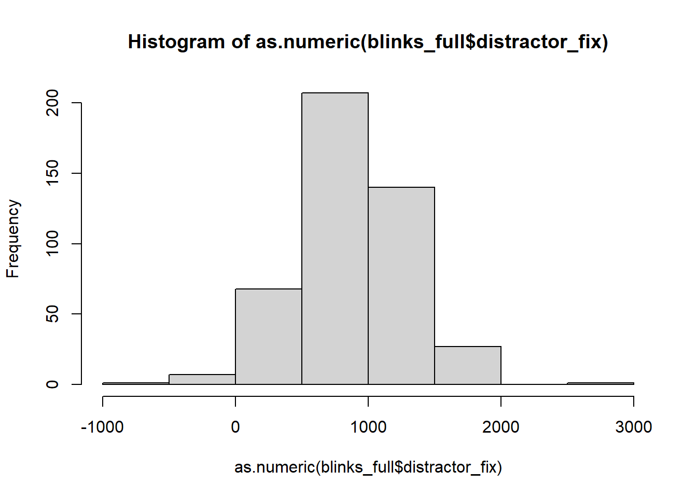

| 1 | subject_1 | /files/vids/blinks_1.mp4 | /files/vids/blinsk_8.mp4 | … |
| 2 | subject_2 | /files/vids/blinks_2.mp4 | /files/vids/blinks_4.mp4 | … |
| 3 | subject_3 | /files/vids/blinks_4.mp4 | /files/vids/blinks_5.mp4 | … |
| 4 | subject_4 | /files/vids/blinks_4.mp4 | /files/vids/blinks_7.mp4 | … |
| 5 | subject_5 | /files/vids/blinks_1.mp4 | /files/vids/blinks_4.mp4 | … |
| 6 | subject_6 | /files/vids/blinks_2.mp4 | /files/vids/blinks_3.mp4 | … |
| … | … | … | … | … |
| … | … | … | … | … |
WalkThrough: Advanced Data Wrangling
In many projects (both in academic research & in other sectors), more time will be spent cleaning and organising data than will actually be spent conducting statistical analyses (a well designed study with a well-thought through data collection process can go a long way to remedy this!).
For this reason, we’re going to take a little detour away from statistics to get some more practice wrangling and cleaning data in R. Don’t worry about the trying to remember all of the new R functions introduced in this topic - there are a lot. Use them as a means of learning about some of the different ways of doing things in R.
Study Background & Data
The data we’re going to look at now is from an experiment on language comprehension, looking at whether people perceive blinking as a sign of lying.
Research Question: Is the rate of blinking during speech interpreted as a sign of dishonesty (in the context of a lie-detection game)?
Participants were informed that they were going to take part in a lie-detection game. They were presented with audiovisual recordings of a speaker stating behind which of two objects (displayed on screen) there was hidden treasure. Utterances took the form of “The treasure is behind the [target name]”.
Over 20 trials, participants were tasked with using the mouse to click on the object they believed the treasure to be behind. They were told that the speaker in the video was attempting to mislead them, meaning that sometimes they told the truth, and sometimes they lied. Crucially, in the videos presented of the speaker producing the utterances, we manipulated the number of times the speaker blinked (from 1 to 10 times). Participants eyes were tracked for the duration of the experiment, with the time spent looking at either object taken as an implicit indication of perceiving a truthful utterance (in which the participant looks at and clicks on the ‘target object’ (the one identified by the speaker as hiding the treasure)) or a dishonest one (in which the participant would look at and click on the alternative ‘distractor’ object).
The data from the experimental design are available at https://uoepsy.github.io/data/blink_setup.csv. In this data, each participant is a row, and the information about what video is presented in each trial are presented in separate columns for each trial. The first bit of the data looks like this:
The data from the eye-tracker, which has been processed to show the proportion of time spent looking at the distractor object in each trial, can be found at https://uoepsy.github.io/data/blink_eyegaze.xlsx. In contrast to the blink_setup.csv data, in this data each trial is a row, so we have 20 rows per participant.
| variable_names | description |
|---|---|
| sub | Participant number |
| trial_no | Trial number |
| distractor_fix | Time spent looking at distractor object (measured in milliseconds from onset of noun phrase) |
| rt | Time taken to click on an object (measured in milliseconds from the onset of the noun phrase |
The top of the data looks like this:
| sub | trial_no | distractor_fix | rt |
|---|---|---|---|
| 1 | 1 | 503.990657311976 | 2812 |
| 1 | 2 | 2810.1367654 | 2974 |
| 1 | 3 | 706.739099152984 | 2257 |
| 1 | 4 | NA | NA |
| 1 | 5 | 223.327680772201 | 4546 |
| 1 | 6 | NA | NA |
| … | … | … | … |
| … | … | … | … |
Different Data Formats
Data can come in lots of different formats, meaning that we need lots of different ways to read data into R. Below is some information on some of the more common functions for reading and writing different types of data.
Text based files
| filetype | description | reading | writing |
|---|---|---|---|
| .csv | comma separated values | tidyverse - read_csv()read.csv()read.table(..., sep = ",") |
tidyverse - write_csv()write.csv()write.table(..., sep=",") |
| .tsv | tab separated values | tidyverse - read_tsv()read.table(..., sep = "\t") |
tidyverse - write_tsv()write.table(..., sep = "\t") |
| .txt | anything-separated values! | read.table(..., sep = ...) |
write.table(..., sep = ...) |
R files
| filetype | description | reading | writing |
|---|---|---|---|
| .RDS | 1 file = a single R object | readRDS() |
saveRDS() |
| .RData | 1 file = a collection of R objects | load() |
save()save.image() - to save all objects in the environment) |
Excel files
The package readxl provides a variety of functions for reading in different types of Microsoft Excel spreadsheet, such as read_excel(), read_xls(), read_xlsx().
Other software
The package haven provides functions for files which have been saved from other statistical software, for instance with read_spss()/read_sav() and read_sas() for files from SPSS and SAS.
Google sheets
The googlesheets4 package can read in data directly from a spreadsheet stored on google drive. You simply find the id of the sheet (it’s the big long string of numbers & letters in the url of your google sheet), and pass it to read_sheet().
It will prompt you to authenticate your account via your browser, but it’s really easy!
Read in the two data-sets. Take care to look at the file extension (e.g., .csv, .tsv, .xlsx) as indicators of what function to try.
Make sure you assign them identifiable names.
Once you’ve loaded the data-set, take a look at them using functions like summary(), str(), dim()/nrow(), or viewing them by clicking on them in the environment.
Hints:
- Some functions like
read_excel()don’t allow you to download directly from a url, like we have been doing with .csv files.- Solution 1:
- Download the data to your computer
- upload to the rstudio server if you are using it
- Direct the function to read it from the place you stored it.
- Solution 2:
- Make R download the data directly to somewhere in your working directory (see
download.file()).
- Make R download the data directly to somewhere in your working directory (see
- Solution 1:
- Do both the data-sets have column names? By default R will assume the first row is the name of the column. Look in the help documentation to see how to stop this from happening.
Renaming Columns
You can access the column names from a data-set using names() or colnames().
names(data)
colnames(data)And we can easily rename these using indexing:
#name the third column "peppapig"
names(data)[3]<-"peppapig"Or in tidyverse, using rename():
data %>%
rename(newname = currentname)Problem
The blink_setup.csv file doesn’t have any column names!
We know that there are 20 trials for each participant, and we can see that the 2nd column has information about which subject it is.
Columns 3:22 are trials 1 to 20.
head(setupdata) X1 X2 X3 ...
1 1 subject_1 /files/vids/blinks_1.mp4 ...
2 2 subject_2 /files/vids/blinks_2.mp4 ...
3 3 subject_3 /files/vids/blinks_4.mp4 ...
4 4 subject_4 /files/vids/blinks_4.mp4 ...
5 5 subject_5 /files/vids/blinks_1.mp4 ...
6 6 subject_6 /files/vids/blinks_2.mp4 ...
7 ... ... ... ...
8 ... ... ... ...Task
- Remove the first column
- Rename columns 2 to 22 with sensible names.
Hints:
names(setupdata) # what are the names
names(setupdata)[2] # what is the 2nd name
names(setupdata) <- c("...", "...", "...",..) # set the namesc("kermit", paste("peppapig", 1:3, sep="_"))[1] "kermit" "peppapig_1" "peppapig_2" "peppapig_3"
Reshaping data
Pivot!
One of the more confusing things to get to grips with is the idea of reshaping a dataframe.
For different reasons, you might sometimes want to have data in wide, or in long format.

When the data is wide, we can make it long using pivot_longer(). When we make data longer, we’re essentially making lots of columns into 2 longer columns. Above, in the animation, the wide variable x, y and z go into a new longer column called name that specifies which (x/y/z) it came from, and the values get put into the val column.
The animation takes a shortcut in the code it displays above, but you could also use pivot_longer(c(x,y,z), names_to = "name", values_to = "val"). To reverse this, and put it back to being wide, we tell R which columns to take the names and values from: pivot_wider(names_from = name, values_from = val).
Problem
The blink_setup.csv file has the data in a different shape to the blink_eyegaze.xlsx file.
- blink_setup.csv : one row per participant
- blink_eyegaze.xlsx : one row per trial
Task
Reshape the data to make it so that there is one row per trial.
Hint
- in the tidyverse functions, you can specify all columns between column x and column z by using the colon,
x:z.
Dealing with character strings
There are loads of functions we can use to do various things with character strings in R.
Here are a few examples:
Problem
If you look at what data was captured by the software to indicate which video was used in each trial, there is a lot of unnecessary data there. The number of the filename indicates how many blinks are in the video. This is the only bit of information we want.
head(setuplong$video)[1] "/files/vids/blinks_1.mp4" "/files/vids/blinsk_8.mp4"
[3] "/files/vids/blinks_1.mp4" "/files/vids/blinks_5.mp4"
[5] "/files/vids/blinks_4.mp4" "/files/vids/blinks_10.mp4"Task
- In your (now reshaped to long) blink_setup.csv data, make a new, or edit an existing column, which is a numeric variable containing the number of blinks presented in the video in each trial
Hints:
- there are lots of different ways you could do this.
- you can substitute out multiple different strings by separating them with the
|symbol:
gsub("dog|cat", "horse", "I have a dog and a cat and the dogs name is Graham")[1] "I have a horse and a horse and the horses name is Graham"
Joining/merging
Now comes a fun bit.
Recall that the research question is interested in the relationship between the number of times the speaker was seen to blink, and the time the participants spent looking at the distractor object (indicating perceived dishonesty).
You may have noticed that these variables are currently in different data-sets! The blink_setup.csv contains information about the numbers of blinks in the videos, and the blink_eyegaze.xlsx contains the data on the fixations.
Solution: we need to join them together!
Note that because both data-sets contain information on participant number and trial number, which uniquely identifies each observation, we can join them together matching on these variables!
There are lots of different ways to join data-sets, depending on whether we want to keep rows from one data-set or the other, or keep only those in both data-sets etc.

?full_join.Problem
Variables are in different data-sets.
Task
- Join the two data-sets (the reshaped-to-long blink_setup.csv data, and the blink_eyegaze.xlsx data) together, and store the joined data in a new object (you can use your own name, but the solutions will use the name
blinks_full).
Hints:
We want to match the observations based on two columns which are present in each data-set, indicating which participant, and which trial.
- Remember that R doesn’t have your intelligence - it doesn’t know that in one data-set the variable is called e.g.,
trial_noand in the other it is calledtrial_number.
- Another thing which R doesn’t know is that “subject_1” in setup data is the same participant as “1” in the eye gaze data. It needs to match the same symbols, and what is more, it needs the variables to be the same type (character, numeric, factor etc).
- you might want to make use of the skills you learned for manipulating character strings.
Impossible Values
It’s important to check that there are no values in the data which are impossible, given what you know about how the data was measured. This is where exploratory plots and descriptive statistics come in handy.
hist(as.numeric(blinks_full$distractor_fix))
In some trials, participants spent less that 0ms fixating on the distractor object!?!?!?
We have a couple of options as to how to deal with them.
- Delete the entire row
- Change the specific entry/s in that variable to be
NA(Not Applicable) - this has the benefit of keeping the rows should we consider those row to have a valid observation in other variables (for instance thert- reaction time?)
Some of the tools we learned in the Reading 1B will come in handy here.
Problem
Some impossible values in the distractor_fix variable.
Task
- Assign the entries of the distractor_fix variable which are < 0 to be NA.
- Are there any other impossible values (or combinations of values) in the data?
Hints:
- While you’re there, why not convert any variables to the right type (numeric, factor, etc).
- We might not have come across this before, but there is a really useful function called
ifelse().
Play around with the below code to learn:
tibble(x = 1:10) %>%
mutate(
new_variable = ifelse(x>5,1,0),
another_new_variable = ifelse(x>5,"peppapig","kermit"),
morevariables = ifelse(another_new_variable == "kermit","kermit the frog", another_new_variable)
)
Missing Data in R
Missing data can be a big problem for statistics. For those of you thinking of taking Multivariate Statistics & Methodology in R next semester, you can look forward to discussions around this sort of issue.
Here, however, we are simply going to discuss the practicalities of how to make R code work when some of your values are NAs.
Consider:
vec <- c(1,2,3,4,NA)
mean(vec)[1] NAThink about why this is:
\[ \text{mean(vec)} = \frac{1+2+3+4+\text{NA}}{5} = \frac{\text{??}}{5} = \text{??} \]
There are numerous different ways that functions in R cope with missing values, but if you’re ever in doubt, try na.rm = TRUE. This will basically tell R to “remove the NAs before doing the calculation”.
mean(vec, na.rm=T)[1] 2.5Other functions include na.omit(), which remove any row with has an NA anywhere in it:
complete_data <- na.omit(data)Outliers
Outliers are the extreme - but plausible - values in variables. There is no one way to identify what is extreme enough to consider and outlier, nor is there one way to handle them.
Some outliers could be considered important observations which we would not want to exclude. However, being an outlier can (but not always) result in an observation exerting too great an influence on our analysis.
Some common approaches to identifying outliers:
- observations which are \(> 3\) (sometimes \(> 2.5\)) standard deviations away from the mean.
- observations greater than \(1.5 \times IQR\) below the first quartile \(Q_1\) or above the third quartile \(Q_3\).
Some common approaches to handling outliers:
- Exclude now - for instance, set as NA
- “Winsorize” - set to a specified percentile. For example, all observations below the 5th percentile set to the 5th percentile, and all observations above the 95th percentile set to the 95th percentile
- Exclude from analysis later, based on measures of influence (we’ll learn about this in future topics)
Make a bloxplot of the distractor_fix variable. Does it look like there might be any outliers?
Custom Functions
Writing your own function
We already saw some custom functions in the first week, where we made some called dice() and wdice().
Can you write a function which, given a vector, returns TRUE if it is an outlier and FALSE if it is not, based on the criterion of being \(>3\) sd away from the mean.
outliers <- function(obs){
...
...
...
}
Look through the solutions to question B8 above, and make sure that you are comfortable with how writing a function works.
Can you edit the outliers() function you wrote to make it work with vectors which include NAs?
Problem
Possible outliers in the distractor_fix variable.
Task
- Replace any values of the
distractor_fixvariable which are \(>3\) standard deviations from the mean withNA.
- Make a new boxplot of the variable
Summary plots
So where are we now? We have a dataset that has one row per trial per subject, and it contains information on the number of blinks, and on the time spent looking at the distractor:
head(blinks_full)# A tibble: 6 × 6
sub trial_no video nr_blinks distractor_fix rt
<dbl> <dbl> <chr> <dbl> <dbl> <dbl>
1 1 1 /files/vids/blinks_1.mp4 1 504. 2812
2 1 2 /files/vids/blinsk_8.mp4 8 NA 2974
3 1 3 /files/vids/blinks_1.mp4 1 707. 2257
4 1 4 /files/vids/blinks_5.mp4 5 NA NA
5 1 5 /files/vids/blinks_4.mp4 4 223. 4546
6 1 6 /files/vids/blinks_10.mp4 10 NA NAThinking way back to the top of this page, we recall that our research question is concerned with whether perceived lying (as implied by more looking at the distractor) increases with the number of blinks seen.
You might notice that we the observations in our dataset aren’t independent from one another - we have 20 datapoints for each subject. And if we split it by “number of blinks”, then we have roughly 45 datapoints for each value. Independence of observations is actually an assumption that is relied upon by all the tests that we cover in this course. So we can’t actually perform an analysis on this data as it is (we’ll learn how to deal with this sort of data structure next semester in the Multivariate Statistics course).
However, it provides a useful example for us to try some plotting:
the stat_summary() function allows us to plot summarised data, rather than the data itself. If we choose to plot it as a “pointrange”, it gives us the mean and standard error for \(y\) across each level of \(x\):
ggplot(blinks_full, aes(x = nr_blinks, y = distractor_fix)) +
stat_summary(geom = "pointrange")